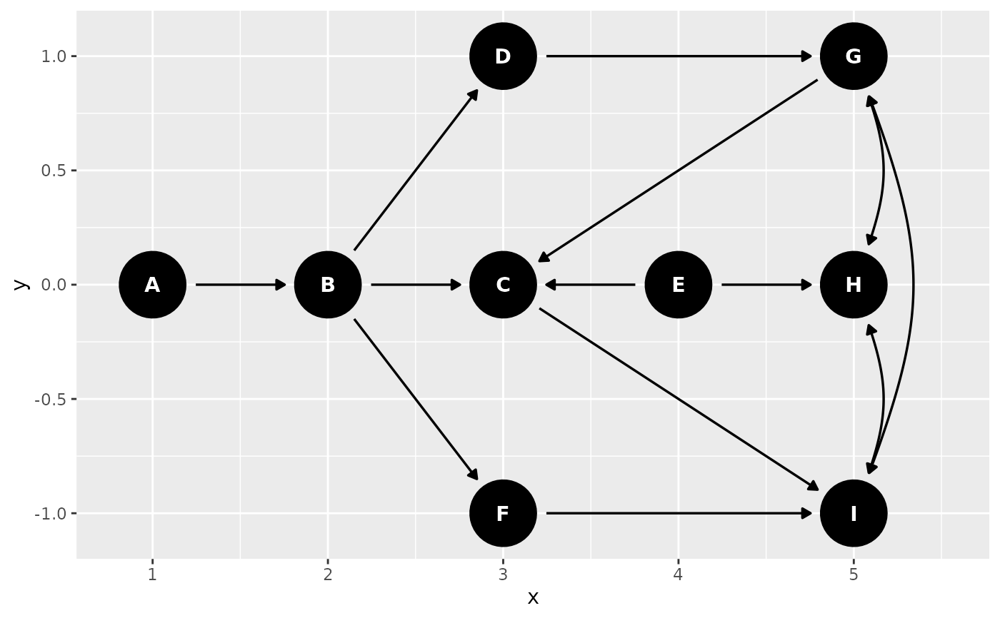
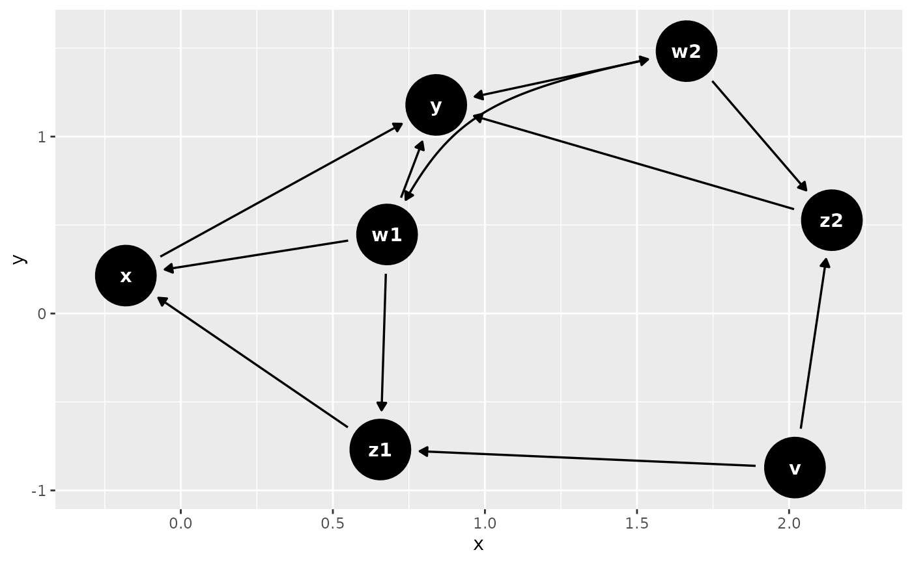

dagify() creates dagitty DAGs using a more R-like syntax. It currently
accepts formulas in the usual R style, e.g. y ~ x + z, which gets
translated to y <- {x z}, as well as using a double tilde (~~) to
graph bidirected variables, e.g. x1 ~~ x2 is translated to x1 <-> x2.
Arguments
- ...
formulas, which are converted to
dagittysyntax- exposure
a character vector for the exposure (must be a variable name in the DAG)
- outcome
a character vector for the outcome (must be a variable name in the DAG)
- latent
a character vector for any latent variables (must be a variable name in the DAG)
- labels
a named character vector, labels for variables in the DAG
- coords
coordinates for the DAG nodes. Can be a named list or a
data.framewith columns x, y, and name
Examples
dagify(y ~ x + z, x ~ z)
#> dag {
#> x
#> y
#> z
#> x -> y
#> z -> x
#> z -> y
#> }
coords <- list(
x = c(A = 1, B = 2, D = 3, C = 3, F = 3, E = 4, G = 5, H = 5, I = 5),
y = c(A = 0, B = 0, D = 1, C = 0, F = -1, E = 0, G = 1, H = 0, I = -1)
)
dag <- dagify(
G ~ ~H,
G ~ ~I,
I ~ ~G,
H ~ ~I,
D ~ B,
C ~ B,
I ~ C + F,
F ~ B,
B ~ A,
H ~ E,
C ~ E + G,
G ~ D,
coords = coords
)
dagitty::is.dagitty(dag)
#> [1] TRUE
ggdag(dag)

dag2 <- dagify(
y ~ x + z2 + w2 + w1,
x ~ z1 + w1,
z1 ~ w1 + v,
z2 ~ w2 + v,
w1 ~ ~w2,
exposure = "x",
outcome = "y"
)
ggdag(dag2)
